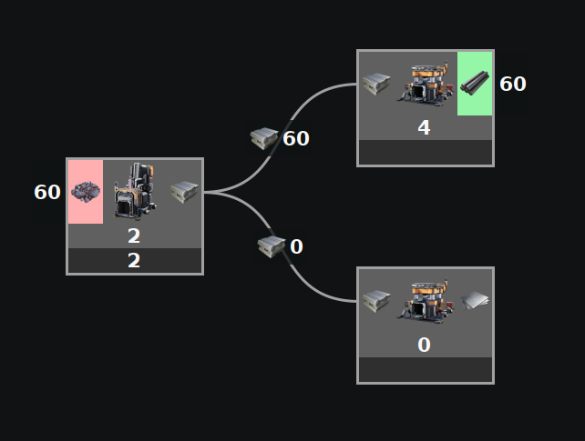
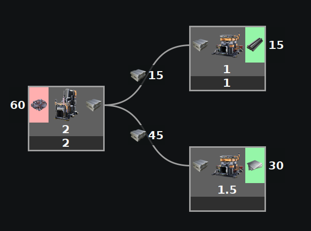
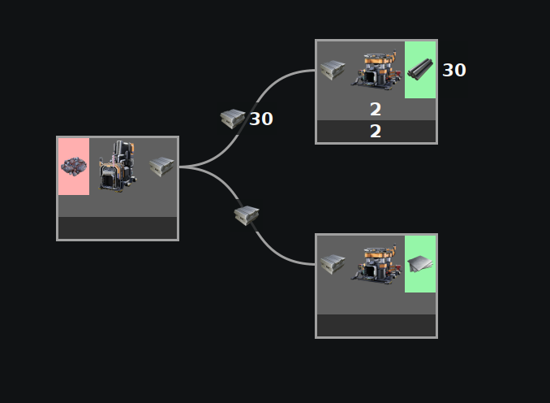
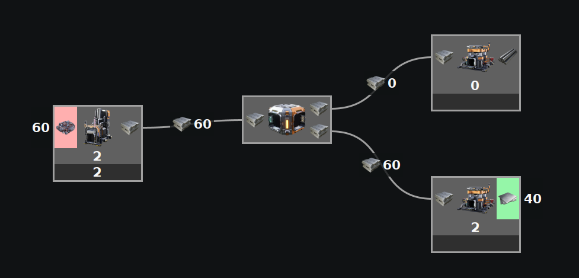
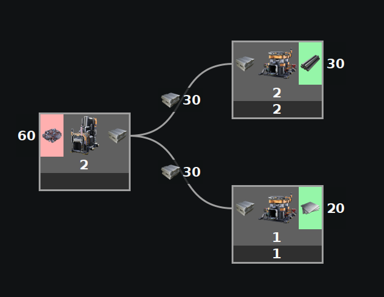

This does NOT take into account splitter or merger preference to split/merge evenly, nor does it take into account priority splitters or mergers.
The values entered in this mode are limits.
This tries to find any solution that maximizes the values and may not always give the same answer if there could be multiple solutions because not enough information was given.
This should always be fast.
Examples

This does not take into account splitter preference to split evenly. This finds any valid solution. This could have calculated other valid solutions such as more ingots going to plates.

While this does ensure the rods cannot go higher, this could have calculated other valid solutions such as more ingots going to plates.

In this example, not enough limits were entered to be able to define everything.

Priority splits and merges are ignored and treated like any other split or merge. In this case it sent all of them to the bottom, but could return different split ratios.

This example has enough limits entered to be able to define how this will split. This will always return this exact result.